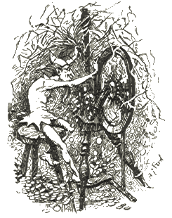

The little man took the necklace, seated himself in front of the wheel, and whirr, whirr, whirr, three turns, and the reel was full, then he put another on, and whirr, whirr, whirr, three times round, and the second was full too. And so it went on until the morning, when all the straw was spun, and all the reels were full of gold.
By daybreak the king was already there, and when he saw the gold he was astonished and delighted, but his heart became only more greedy. He had the miller's daughter taken into another room full of straw, which was much larger, and commanded her to spin that also in one night if she valued her life.